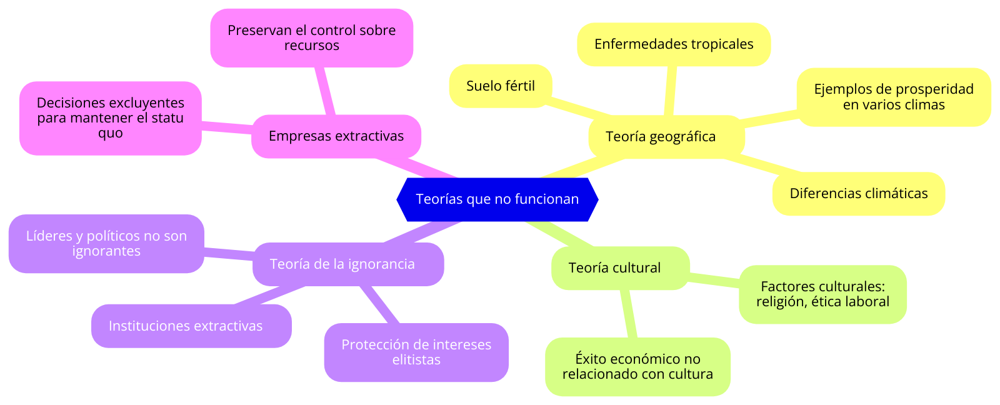

Este capítulo critica las teorías tradicionales que intentan explicar el desarrollo y el fracaso económico. Los autores analizan y descartan explicaciones basadas en la geografía (teoría geográfica), la cultura (teoría cultural) y la ignorancia (teoría de la ignorancia). Las teorías geográficas sugieren que las diferencias climáticas, la fertilidad del suelo y las enfermedades tropicales son las principales causas del subdesarrollo. Sin embargo, los autores argumentan que hay ejemplos de prosperidad en diferentes climas y geografías.
La teoría cultural, que atribuye el éxito económico a factores culturales como la religión o la ética de trabajo, es igualmente rechazada por Acemoglu y Robinson. En cuanto a la teoría de la ignorancia, que sostiene que los líderes y políticos toman decisiones equivocadas por falta de conocimiento, los autores afirman que muchos líderes no son ignorantes, sino que protegen deliberadamente sus intereses personales y los de las élites a través de instituciones extractivas.
Desde el punto de vista de las empresas extractivas, las teorías rechazadas aquí no explican la razón por la cual ciertas élites empresariales y políticas se esfuerzan activamente por mantener el statu quo a través de decisiones económicas excluyentes. En lugar de desconocer los beneficios de instituciones inclusivas, estas élites prefieren preservar su dominio y control sobre los recursos.